Reading Comprehension Worksheets
Informational text as a cloze passage with word bank, a QR-code listening task with free audio, and a word search – 5 pages with answer keys.
4,222 resources
Subject
Grade
By grade: 5th Grade · 9th Grade
Polaris – Italian Reading Comprehension Worksheet (Scheda): Cloze & Listening
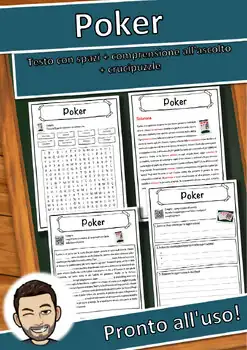
Poker – Italian Reading Comprehension Worksheet (Scheda): Cloze & Listening
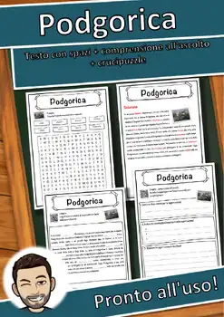
Podgorica – Italian Reading Comprehension Worksheet (Scheda): Cloze & Listening
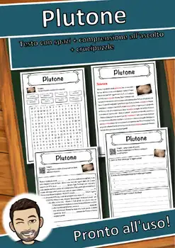
Plutone – Italian Reading Comprehension Worksheet (Scheda): Cloze & Listening

Platone – Italian Reading Comprehension Worksheet (Scheda): Cloze & Listening
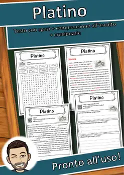
Platino – Italian Reading Comprehension Worksheet (Scheda): Cloze & Listening
Plantae – Italian Reading Comprehension Worksheet (Scheda): Cloze & Listening
Planetario – Italian Reading Comprehension Worksheet (Scheda): Cloze & Listening
Pizza – Italian Reading Comprehension Worksheet (Scheda): Cloze & Listening
St. Petersburg, Florida – Worksheet: cloze text, listening and word search
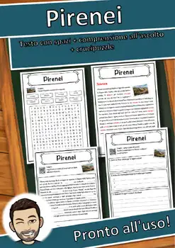
Pirenei – Italian Reading Comprehension Worksheet (Scheda): Cloze & Listening
Pirati – Italian Reading Comprehension Worksheet (Scheda): Cloze & Listening
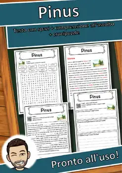
Pinus – Italian Reading Comprehension Worksheet (Scheda): Cloze & Listening
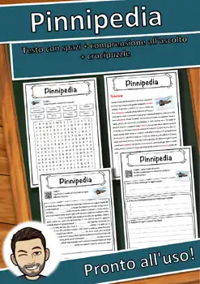
Pinnipedia – Italian Reading Comprehension Worksheet (Scheda): Cloze & Listening
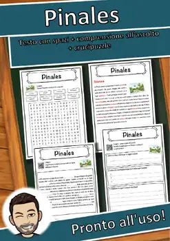
Pinales – Italian Reading Comprehension Worksheet (Scheda): Cloze & Listening
Piede – Italian Reading Comprehension Worksheet (Scheda): Cloze & Listening
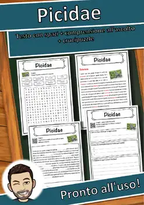
Picidae – Italian Reading Comprehension Worksheet (Scheda): Cloze & Listening
Picea – Italian Reading Comprehension Worksheet (Scheda): Cloze & Listening
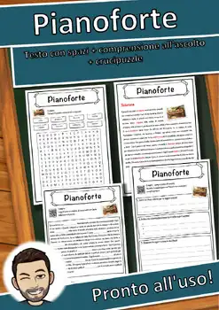
Pianoforte – Italian Reading Comprehension Worksheet (Scheda): Cloze & Listening
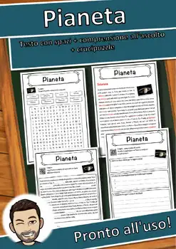
Pianeta – Italian Reading Comprehension Worksheet (Scheda): Cloze & Listening
Petrolio – Italian Reading Comprehension Worksheet (Scheda): Cloze & Listening
Peste – Italian Reading Comprehension Worksheet (Scheda): Cloze & Listening
Pesce – Italian Reading Comprehension Worksheet (Scheda): Cloze & Listening
Perù – Italian Reading Comprehension Worksheet (Scheda): Cloze & Listening
Pertosse – Italian Reading Comprehension Worksheet (Scheda): Cloze & Listening
Permafrost – Italian Reading Comprehension Worksheet (Scheda): Cloze & Listening
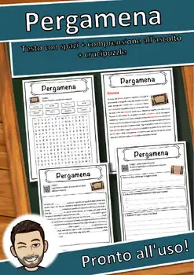
Pergamena – Italian Reading Comprehension Worksheet (Scheda): Cloze & Listening

Pentecoste – Italian Reading Comprehension Worksheet (Scheda): Cloze & Listening
Pensiero – Italian Reading Comprehension Worksheet (Scheda): Cloze & Listening
Penisola – Italian Reading Comprehension Worksheet (Scheda): Cloze & Listening

Pendolo – Italian Reading Comprehension Worksheet (Scheda): Cloze & Listening
Pelé – Italian Reading Comprehension Worksheet (Scheda): Cloze & Listening
Pelliccia – Italian Reading Comprehension Worksheet (Scheda): Cloze & Listening
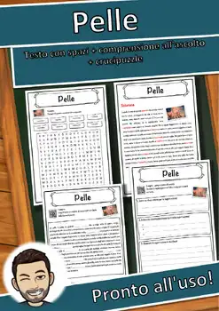
Pelle – Italian Reading Comprehension Worksheet (Scheda): Cloze & Listening
Pediatria – Italian Reading Comprehension Worksheet (Scheda): Cloze & Listening
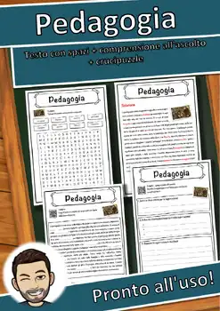
Pedagogia – Italian Reading Comprehension Worksheet (Scheda): Cloze & Listening
Pechino – Italian Reading Comprehension Worksheet (Scheda): Cloze & Listening
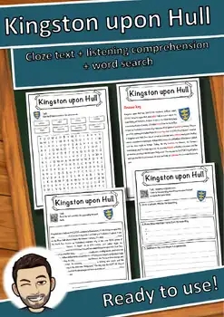
Kingston upon Hull – Worksheet: cloze text, listening and word search
Parto – Italian Reading Comprehension Worksheet (Scheda): Cloze & Listening
Musical – Italian Reading Comprehension Worksheet (Scheda): Cloze & Listening
Passato – Italian Reading Comprehension Worksheet (Scheda): Cloze & Listening
Passaporto – Italian Reading Comprehension Worksheet (Scheda): Cloze & Listening

Pasqua – Italian Reading Comprehension Worksheet (Scheda): Cloze & Listening
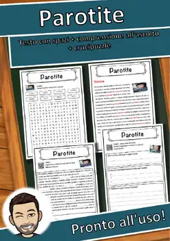
Parotite – Italian Reading Comprehension Worksheet (Scheda): Cloze & Listening
Parlamento – Italian Reading Comprehension Worksheet (Scheda): Cloze & Listening
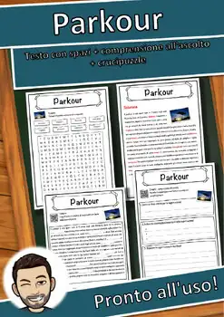
Parkour – Italian Reading Comprehension Worksheet (Scheda): Cloze & Listening
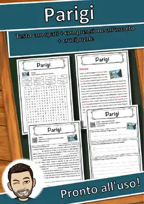
Parigi – Italian Reading Comprehension Worksheet (Scheda): Cloze & Listening
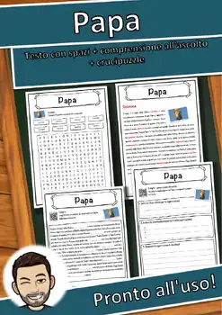
Papa – Italian Reading Comprehension Worksheet (Scheda): Cloze & Listening
No resources found – try a different search term or filter.